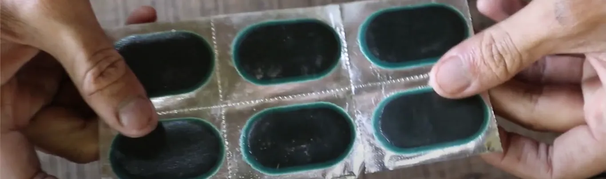

Cara Mudah Tambal Ban Tubeless dengan Cold-Patch di Rumah

Ban tubeless bocor di jalan? Tenang, ada solusi praktis dan kuat yang bisa Anda lakukan sendiri di rumah, yaitu metode tambal ban cold-patch. Teknik ini menambal dari bagian dalam ban, sehingga hasilnya jauh lebih awet dibandingkan tambal cacing dari luar. Berikut panduan lengkapnya.
Alat dan Bahan yang Diperlukan
Anda hanya memerlukan kit tambal ban cold-patch yang biasanya berisi:
- Patch: Karet tambalan khusus berbentuk stiker.
- Rubber Cement: Lem khusus yang berfungsi sebagai pembersih sekaligus perekat.
Langkah-Langkah Menambal Ban dengan Cold-Patch
Ikuti 5 langkah mudah ini untuk hasil yang sempurna:
- Lepas Ban dari Velg: Gunakan alat congkel ban untuk melepas ban dari velg agar Anda bisa mengakses bagian dalamnya.
- Bersihkan Area Bocor: Temukan lubang dan oleskan rubber cement secara merata di sekitarnya. Lem ini akan membersihkan permukaan karet dari kotoran dan oli.
- Tempelkan Patch: Setelah rubber cement agak kering, kelupas lapisan pelindung patch dan tempelkan tepat di atas lubang. Tekan dengan kuat dari tengah ke tepi untuk memastikan tidak ada gelembung udara.
- Tunggu Kering Sempurna: Diamkan beberapa menit agar lem benar-benar merekat kuat.
- Pasang dan Periksa: Pasang kembali ban ke velg, pompa, lalu periksa kebocoran dengan menyemprotkan air sabun pada area tambalan. Jika tidak ada gelembung, berarti pekerjaan Anda berhasil!
Tips Tambahan
- Pastikan permukaan ban benar-benar bersih dan kering sebelum mengoleskan lem.
- Gunakan tekanan yang cukup saat menempelkan patch agar merekat dengan sempurna.
- Simpan sisa kit di tempat sejuk dan kering agar tidak cepat rusak.
Video Tutorial Menambal Ban
Untuk melihat prosesnya secara lebih jelas, tonton video singkat di bawah ini!
Dengan metode cold-patch, Anda bisa memperbaiki ban tubeless sendiri dengan hasil sekuat di bengkel. Selamat mencoba!